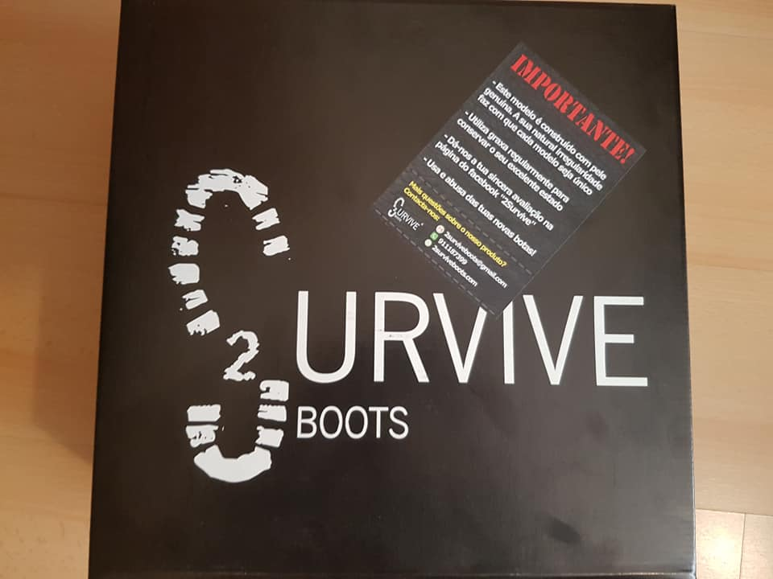
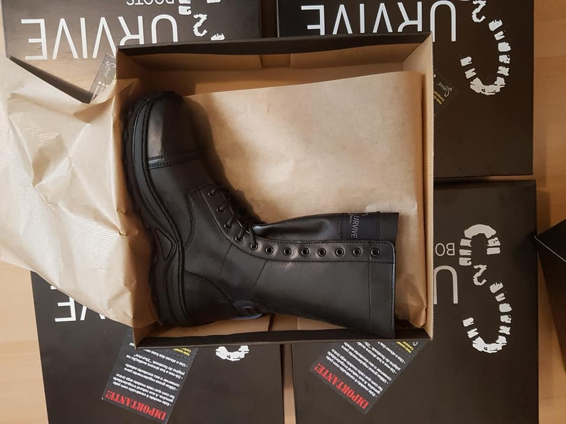
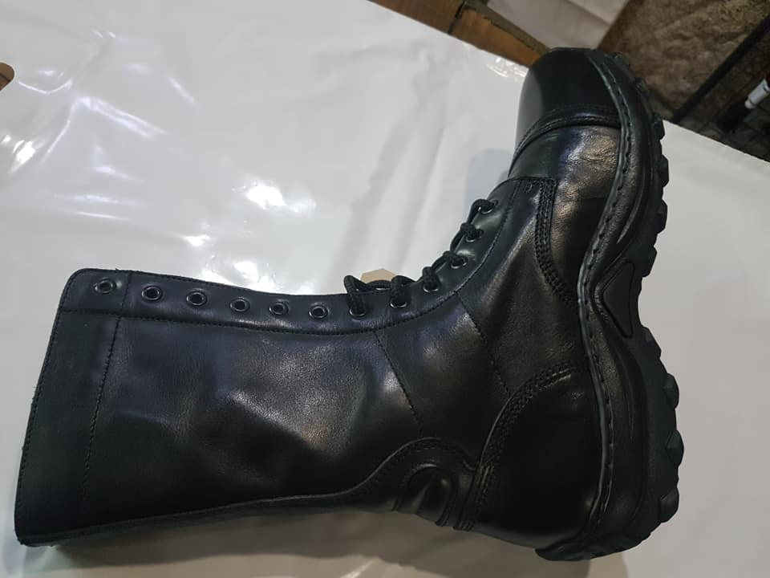
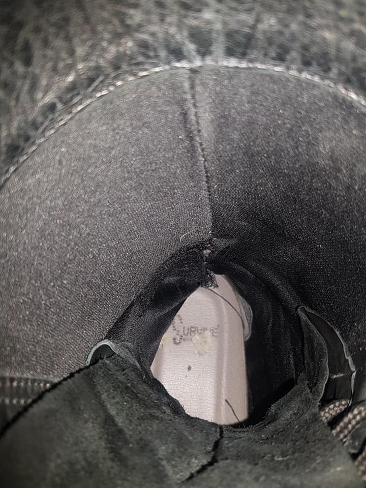
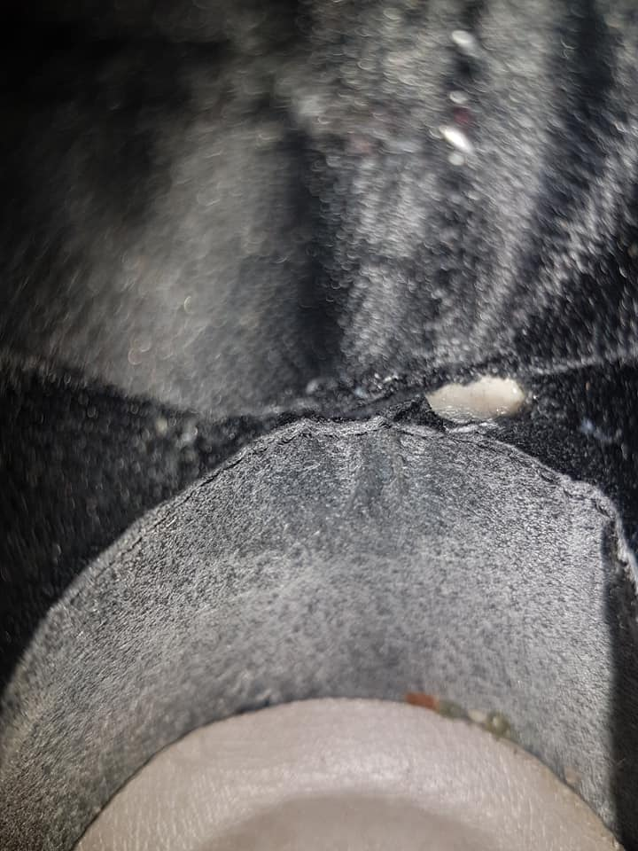

2SURVIVE PQ PRO
Há uns meses atrás , a nossa equipa decidiu comprar botas novas para usar na nossa pratica e apostar em calçado Português para uso na nossa actividade. Compramos botas da 2Survive que alguns militares no exercito hoje em dia usam diariamente.
{kind=link}

{kind=link}

Conforto: A botas PQ Pro são muito confortáveis apesar de serem de pele com um ligeiro forro em pano no interior muito fino (ver voto), também têm um reforço especifico a nível do calcanhar permitindo para quem não usa frequentemente botas não aleijar e criar ferida, coisa que acontecia derivado a uma dobra que se forma com o tempo a esse nível nas botas anteriores (PQ). São botas simples mas confortáveis, são quentes no verão sem ser em excesso mas como não têm "respiros" podem deixar os pés suados (humidos) após muitas horas seguidas de uso. Por outro lado não aquecem muito sem deixar o pé frio no inverno isto quando usadas com meias adequadas. Com o tempo derivado ao suor e ou humidades (chuva) a pele fica mais mole e as botas perdem um pouco da sua configuração e estética nomeadamente na parte de cima da ponta da bota.
Impermeabilidade: As botas são vendidas como não sendo impermeáveis, mas tal como o modelo PQ e após testes as botas sendo de cano alto permitem a bota mergulhar dentro de agua e lama até um ponto resoavelmente alto sem nunca molhar os pés do utilizador,e o uso de graxa para manutenção permite melhorar a impermeabilidade sem estragar as botas.
{kind=link}

Durabilidade: A nível da sola das botas temos que verificar se não desgastam prematuramente de um dos lados ou por inteira com uso diário, e neste caso após quase um ano de uso as mesmas não apresentam sinais de desgaste prematuro nem desgaste lateral que o modelo PQ tinha derivado a uma sola muito fina e simples, em comparação: o modelo PQ Pro tem uma sola grande alta e confortável que amortece o impacto no solo a cada passo do utilizador. Sola que permite agarrar o terreno devidamente mas em chão escorregadio liso não agarra o suficiente caso o solo estiver com gordura... .
Relativamente a durabilidade da bota em si externa, ou seja se rasga com facilidade ou aguenta estar em contacto com elementos exteriores, agua, lama, terra, ou outros sem danificar a bota. Neste ponto só tenho de apontar uns riscos que acontecem quando estamos em contacto com silvas no meio do mato isto sem penetrar na bota e aleijar o utilizador e sem danificar a bota, a pele apesar de ser mais macia que na versão antiga (PQ) é de boa qualidade e de uma espessura boa o que permite não rasgar com facilidade e não permitir objectos contundentes entrar na bota com facilidade. Na durabilidade interna no entanto fui confrontado com um problema em um dos pares, após calçar e tirar botas com frequência acabei por danificar a parte interior de uma das botas no local do calcanhar no forro do pano interior onde se encontra uma peça estrutural da bota e que agora ao colocar a bota provoca um certo desconforto.(ver foto) Após entrar o contacto com a 2Survive foi me indicado que se não desapertarmos devidamente a bota quase na sua totalidade sempre que tiramos ou calçamos as botas é um problema que pode acontecer, e de facto vem indicado na caixa das botas, mas para umas botas de nível "militar" não aceito com muito agrado esse tipo de resposta, pois no antigo modelo nunca desapertei a quasi-totalidade das botas e nunca tive esse tipo de problema e após corridas (marcor, marfor) ou mesmo durante as instruções tínhamos de trocar de calçado rapidamente e tive muitas vezes de esforçar para tirar a bota (a pele sendo mais rígida eram mais difíceis de tirar), e neste par desapertei sempre até conseguir tirar o pé de maneira confortável sem ter de esforçar demasiado mas nunca desapertei os atacadores até meio é um facto. Sabendo que militares são "brutos" e que botas de cano alto são mais difíceis de calçar e de retirar e que o atado nomeadamente dos Paraquedistas não é algo que se faz a correr para uma bota que pretende ser usada pelos militares que não vão ter metade do cuidado que eu tive em desapertar as minhas, para a grande maioria dos militares acho que é um problema ... . a minha sugestão e preocupação a cerca do reforço ou alteração no futuro nessa zona da bota já foi comunicada a 2Survive. A nível de manutenção, basta lavar com agua passar um escova com graxa e as botas ficam quase como novas.
{kind=link}

{kind=link}

Preço: As botas são vendidas pelo preço recomendado de 74,99 euros (com envio incluído), com sorte ou em promoção podem eventualmente comprar um pouco mais barato do que o preço indicado. E para o preço são botas de qualidade sem duvida que apresentam bastantes melhorias em relação ao modelo em que são inspiradas isto por um acréscimo de 10,00-15,00 euros em relação ao modelo PQ. O que torna o modelo bastante interessante.
Conclusão: Pelo preço qualidade, estas botas são muito boas para serem utilizadas tanto no dia a dia, no trabalho bem como no airsoft, derivado ao conforto e a durabilidade das mesmas sem esquecer o peso de cerca de 600 gramas pelo par e uma manutenção muito facil, são boas para forças de segurancas por exemplo. Terão no entanto de ter noção de que se trata de botas de cano alto e que não são botas que se calçam ou que se descalçam rapidamente, se isso não é um problema para vocês comprem sem hesitar, não se vão arrepender de certeza. Por outro lado não são as mais indicadas em profissões onde trabalham em solos lisos e onde existe gordura no chão. Relativamente a serem botas para uso militar, cada um poderá ter a sua própria opinião sobre isso mas se não tiverem cuidado poderá acontecer o que me aconteceu em um dos pares o que para mim para um militar não pode acontecer, e sendo da responsabilidade do utilizador não é abrangido pela garantida de 1 ano fornecido pela 2Survive. Pontuação final: 3/5 *Caso este problema não tivesse acontecido a bota teria sem duvida recebido uma nota de 4/5 PS: Para informação as botas PQ pro têm metal ou seja se trabalham num local com porticos/detetores de metais,o portico vai sempre detetar o metal e sinalizar.site criado por Sarge